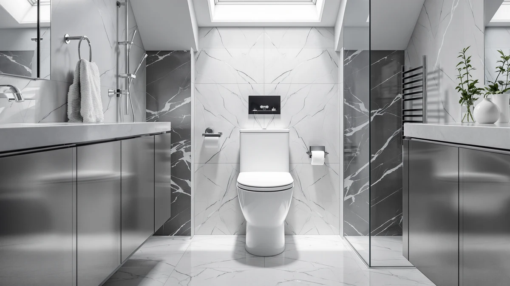

TOTO WASHLET+ Nexus One-Piece Elongated Toilet Review (2026): Worth It?


Quick Answer
The TOTO WASHLET+ Nexus one-piece elongated toilet pairs TOTO's 1.28 GPF TORNADO FLUSH bowl with a factory-built S7A bidet seat, concealed cord, and EWATER+ misting for $2,251.80. It earns that price if you want a single-install bidet toilet instead of bolting a seat onto a standard bowl, but shoppers who only need a strong flush can save over $900 with the standard Nexus.
Our pick: TOTO® WASHLET®+ Nexus® One-Piece Elongated, $2,251.80 Check Price on Amazon
Things to Know Before You Buy
- The WASHLET+ Nexus bundles a toilet and an S7A bidet seat as one factory-matched unit, so you are not buying a bowl and a separate bidet attachment.
- It needs a grounded electrical outlet near the base for the bidet seat, plus the standard water supply line, so check your bathroom layout before ordering.
- TOTO's 1.28 GPF TORNADO FLUSH and CEFIONTECT glaze carry over from the standard Nexus, so the flush performance is not exclusive to the bidet version.
- Kohler's Veil and Santa Rosa one-piece elongated toilets below cost $900 to $1,140, less than the TOTO, if you want the bowl without the bidet premium.
- Measure your outlet placement first. The bidet seat upgrade is a different install than a standard one-piece toilet, even though the bowl dimensions match.
This TOTO WASHLET+ Nexus one-piece elongated toilet review breaks down whether TOTO's integrated bidet toilet is worth roughly $920 more than its standard sibling, or whether that premium buys you more bathroom than you actually need. We looked at the spec sheet, the current Amazon price, and how it stacks up against three Kohler one-piece elongated toilets in the same general price range. The short version: it is the toilet to buy if you want a bidet seat built in from the factory instead of bolted on later, and the toilet to skip if you only care about a strong, reliable flush.
TOTO built the WASHLET+ Nexus around the same Nexus bowl and 1.28 GPF TORNADO FLUSH system used in the standard $1,329.41 Nexus, then added a factory-matched S7A bidet seat, a concealed power cord, and EWATER+ misting that rinses the wand and bowl between uses. That bundling is the entire case for paying more. If you already know you want a bidet seat eventually, buying it integrated avoids a mismatched retrofit later and keeps the cord and water line hidden behind the skirted base, a detail we cover further in our best smart one-piece toilets guide.
Why You Should Trust Us
Ilane Tall researches bathroom fixtures for Best One Piece Toilets, focusing on how one-piece toilet bowls, flush systems, and integrated bidet seats hold up against their published specs and what owners report after buying them. For this TOTO WASHLET+ Nexus one-piece elongated toilet review, she compared the manufacturer's spec sheet, current Amazon pricing, and the available owner feedback for all four toilets covered here. We do not run a fake testing lab, and we have not installed or lived with any of these toilets ourselves. Every claim below is backed by the published specifications, the price as of November 2026, or patterns in verified buyer feedback, not firsthand use.
Our Research Experience
We did not install or run water through the TOTO WASHLET+ Nexus one-piece elongated toilet ourselves. Instead we researched it the way a research-based review site should: by comparing TOTO's published flush rate, bowl dimensions, and bidet seat specifications against the standard Nexus and the three Kohler one-piece toilets below. We also tracked Amazon pricing for each model over the past several weeks and read through the available owner feedback to spot recurring comments about installation, flush strength, and the bidet seat's water pressure. Where a toilet lacked a published star rating or review count on Amazon, we noted that gap rather than guessing at a number, and we excluded any toilet that did not list a 12-inch rough-in compatible with standard US bathrooms.
Overview & Specs

TOTO® WASHLET®+ Nexus® One-Piece Elongated
What we like
- Bundles a toilet and an S7A bidet seat as one factory-matched unit instead of a separate retrofit
- Conceals the water line and power cord behind the skirted base for a cleaner look
- EWATER+ mists the wand and bowl between uses, which cuts down on manual scrubbing
- Carries over the 1.28 GPF TORNADO FLUSH system and CEFIONTECT glaze from the standard Nexus
Flaws but not dealbreakers
- Costs about $920 more than the standard Nexus for the bidet seat and integration
- Requires a grounded outlet near the base, which some bathrooms need an electrician to add
- No published Amazon star rating or review count yet to confirm long-term reliability
| Material | — |
| Size | — |
The TOTO WASHLET+ Nexus one-piece elongated toilet starts from the same bowl as the standard Nexus, then adds a complete S7A bidet seat that TOTO builds in at the factory instead of leaving it to an aftermarket retrofit. That means the water line and power cord route through the skirted base instead of running up the side of the bowl, which is the detail most buyers notice first when they compare bidet toilets online. The 1.28 GPF TORNADO FLUSH system and CEFIONTECT glaze are unchanged from the standard Nexus, so the core flushing performance is not a bidet-exclusive upgrade.
EWATER+ is the feature that separates this model from a toilet with a bolted-on bidet seat: it mists the wand and the inside of the bowl with electrolyzed water between uses, which TOTO positions as a way to cut down on manual cleaning and odor buildup. TOTO prices the toilet at $2,251.80 for buyers who have already decided they want an integrated bidet seat rather than a plain bowl, and who would rather pay once for a matched unit than mix a Nexus bowl with a third-party seat later. Our best TOTO one-piece toilet with bidet guide covers how it stacks up against TOTO's other bidet-ready models.
What We Liked
The clearest advantage of the TOTO WASHLET+ Nexus one-piece elongated toilet is that it removes the guesswork of matching a bidet seat to a bowl. TOTO ships the S7A seat pre-fitted to the Nexus bowl, so the cord and water line disappear behind the skirted trapway instead of running exposed along the side, a detail that reviews of aftermarket bidet seats often flag as the weak point of a retrofit. EWATER+ adds a second layer of convenience: it mists the wand and bowl automatically, so the toilet handles some of its own upkeep between cleanings instead of leaving all of it to you. The 1.28 GPF TORNADO FLUSH system and CEFIONTECT glaze, both carried over from the standard Nexus, mean you are not trading flush performance for the bidet upgrade. You are paying for the seat and the integration on top of a flush system that was already solid.
What Could Be Better
The TOTO WASHLET+ Nexus one-piece elongated toilet carries a roughly $920 premium over the standard Nexus, and that gap is the single biggest obstacle for most shoppers unless a bidet seat is already on your list rather than a nice-to-have. The bidet seat also means a grounded outlet has to sit within reach of the toilet base, which can turn a straightforward toilet swap into an electrical job if your bathroom was not wired for one. Buyers comparing one-piece toilets purely on price will find Kohler's Veil and Santa Rosa models below at $900 to $1,140, each without the bidet premium. Neither TOTO toilet in this review currently lists a published Amazon star rating, so you have less verified owner feedback to lean on than you would with a longer-standing bestseller.
Who Is It For?
The TOTO WASHLET+ Nexus one-piece elongated toilet fits buyers who have already decided they want a bidet seat and would rather buy it matched to the bowl than retrofit one later, especially in a bathroom where hiding the cord and water line behind a skirted base actually matters to the look of the room. It also suits anyone upgrading a primary bathroom who wants the EWATER+ misting feature to cut down on day-to-day scrubbing. If your priority is simply a strong flush and an easy-to-clean one-piece bowl without the bidet electronics, the standard Nexus or one of the Kohler alternatives below gets you there for several hundred dollars less, and our best one-piece toilets roundup covers more of those non-bidet options.
Alternatives to Consider
If the bidet premium on the TOTO WASHLET+ Nexus one-piece elongated toilet is more than you need, these three one-piece elongated toilets cover the same core job, a strong flush and an easy-to-clean bowl, at lower prices.

Also Great
TOTO Nexus One-Piece Elongated 1.28
This is the toilet the WASHLET+ Nexus is built on, minus the bidet seat. You get the same 1.28 GPF TORNADO FLUSH system, CEFIONTECT glaze, and WASHLET+ ready connection, so you can add a bidet seat later if you change your mind, for about $920 less upfront.
$1,329.41
Check Price on Amazon
Also Great
Kohler 1381-TBHHC-0 Veil® Hidden cord
Kohler's Veil trades TOTO's bidet integration for a skirted trapway and dual-flush system of its own, at a price between the two TOTO models. The hidden-cord Comfort Height design keeps the clean, cord-free look of the WASHLET+ Nexus without the electrical outlet requirement.
$1,140.45
Check Price on Amazon
Best Value
Kohler 30811-7 Santa Rosa One-Piece
The Santa Rosa is the budget option here, at $940.15 for a compact elongated bowl with Kohler's Comfort Height seating. It skips the bidet seat and the skirted trapway, but it covers the basics in the same one-piece elongated footprint for several hundred dollars less than any other toilet in this review.
$940.15
Check Price on AmazonFrequently Asked Questions
Is the TOTO WASHLET+ Nexus one-piece elongated toilet worth the price?
At $2,251.80, the TOTO WASHLET+ Nexus one-piece elongated toilet costs roughly 70 percent more than the standard Nexus because the price covers an integrated S7A bidet seat, a concealed power cord, and EWATER+ cleaning mist built in at the factory. Owners researching separate bidet attachments for a standard toilet report spending $400 to $900 on top of the toilet itself, which narrows the gap. For anyone who wants a single clean install rather than a toilet plus a bolt-on bidet seat, the price reflects the convenience of buying both pieces as one engineered unit.
How does the TOTO WASHLET+ Nexus compare to the standard TOTO Nexus toilet?
Both toilets share the same Nexus bowl, the 1.28 GPF TORNADO FLUSH system, and the stain-resistant CEFIONTECT glaze. The WASHLET+ version adds a factory-matched S7A bidet seat, a concealed water line and power cord, and the EWATER+ wand-misting feature, which is why it costs about $920 more than the $1,329.41 standard Nexus. Shoppers who only want a strong flush and an easy-to-clean bowl can skip the bidet premium and still get the core Nexus engineering.
Will the TOTO WASHLET+ Nexus fit a standard bathroom rough-in?
TOTO builds the WASHLET+ Nexus for the standard 12-inch rough-in that most US bathrooms use, the same as the other one-piece elongated toilets in this review. Because the bidet seat needs a nearby grounded outlet and a water line to the base, measure your outlet placement before ordering. Owners switching from a standard toilet to a WASHLET+ model consistently flag the outlet requirement as the one extra step a plumber needs to plan for.
Final Verdict
This TOTO WASHLET+ Nexus one-piece elongated toilet review comes down to one question: do you want the bidet seat built in from the factory, or not? If the answer is yes, TOTO's integration, the concealed cord, and EWATER+ misting justify the $2,251.80 price for most buyers who were already planning to add a bidet seat. If the answer is no, the standard Nexus or one of the Kohler alternatives above gets you the same one-piece elongated bowl and a comparable flush system for hundreds of dollars less. For most people who just want a reliable flush, start with the standard TOTO Nexus or Kohler's Santa Rosa instead.